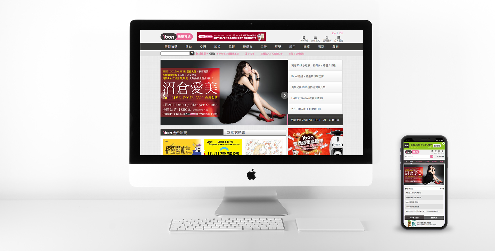
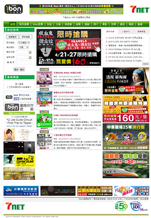
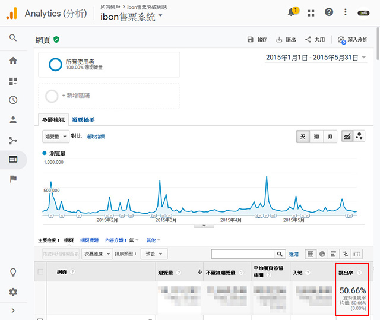
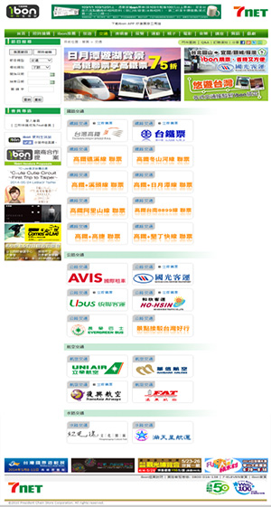
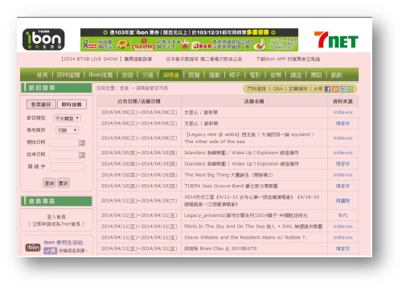
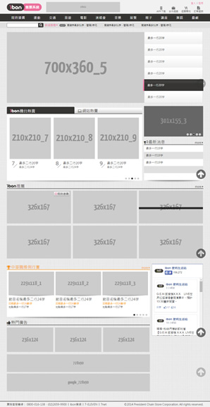

ibon售票系統網站
2015/8
-
網站前身為ibon票務資訊網，因應業務發展需求，網站須重新建置改版規劃，並重新定位成「ibon售票系統網站」。
改版重點
版位及功能改善
- 符合各項業務需求，提昇售票系統廣告版位價值。
- 搜尋、分類改善
- 規劃各售票系統演出資訊擷取呈現
- 社群分享
手機瀏覽
- 設計易於轉換為手機瀏覽的界面及廣告版位
- 手機版頁面redesign
- 各裝置瀏覽都能正常顯示之版位
廠商內容導入
- Content Provider導入(ex: 影音、賽程表、車次查詢、KKBBOX專欄….)
廣告交換版位
- 廣告收入或資源交換版位規劃(ex: 數位音樂)
專案歷程
-
- 前期規劃：運用Google Analytics 分析網站瀏覽數據分析，並展開業務需求與專案人員訪談，做為改版基準參考。
- 開發前期：依照需求整理為wireframe，加速專案進行討論，同時請美術設計參與討論各裝置版型適應變化。統籌系統人員
- 開發中期：規劃改版日並調配建檔作業流程，網站切換後須正常運作，並訂定上線測試標準與時程安排。
- 開發後期：回饋整理個專案人員測試結果，解決網站測試問題，版型異常與操作面課題。
- 完成上線。
訪談內容整理
-
- 希望增加銷售版位曝光，增加業務籌碼。
 - 類別頁面分類不清楚，跳出率達到50％。
 - 反應舊版網站列表頁面文字過多，佔頁面內容70％，無瀏覽誘因。

- 希望增加銷售版位曝光，增加業務籌碼。
-
解決改善方式
-
- 依據首頁廣告版位需求，無法全面滿足廠商，先制定版位數量，再使用隨機輪播方式進行功能開發，排除人工排序，採用系統自動顯示處理。並於各類別頁面資訊列表搭配圖片版位進行視覺與文字整合
 - 子頁面視覺版面重新分類，梳理後依照各類別專案成員定義類別名稱及順序，運用類別名詞討論取得共識，符合使用者認知。
- 提供更多曝光版位版型，以及主題類別廣宣行銷工具，達到宣傳目的。
- 依據首頁廣告版位需求，無法全面滿足廠商，先制定版位數量，再使用隨機輪播方式進行功能開發，排除人工排序，採用系統自動顯示處理。並於各類別頁面資訊列表搭配圖片版位進行視覺與文字整合
改版成效
-
2015/8/27 完成上線，以前後4個月份數據對照 改版後人次成長3％，瀏覽量成長90％，平均一位瀏覽者瀏覽頁數增加84％並減少80％跳出率。